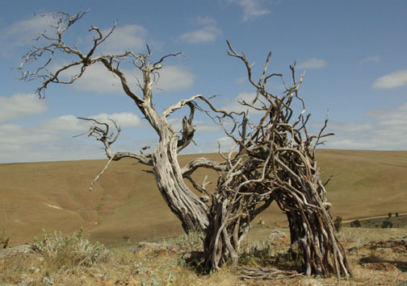
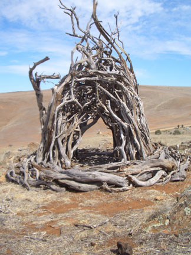
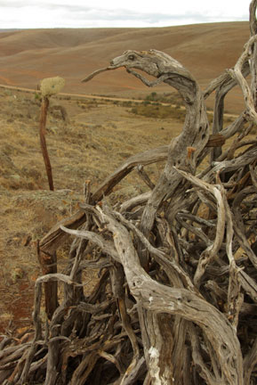
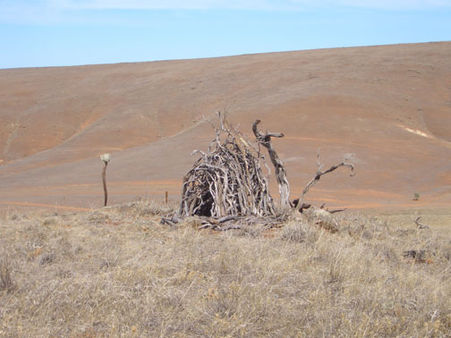
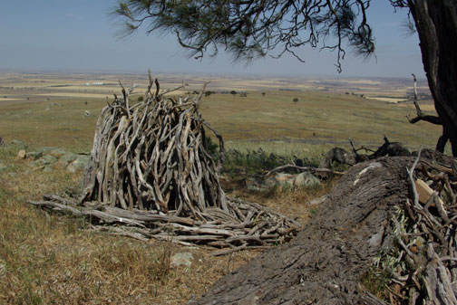
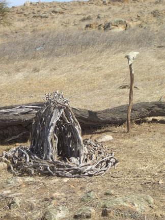
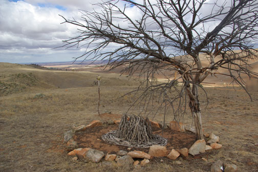
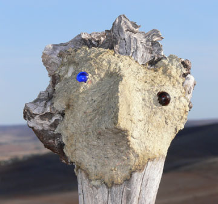
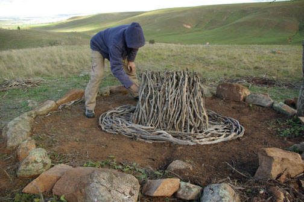
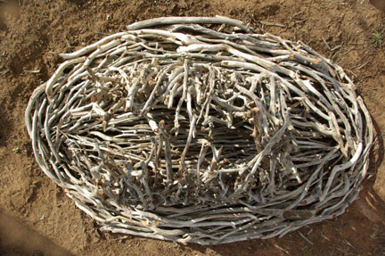

|
The three Palmer bowers were installed
by the artist and Leo Davis over a -------- week period from
---- to ------ . All are made on site from material (mostly Casuarina
sticks) found on the property. The accompanying birds heads were
made from papier-mâché on large sticks collected
from the Palmer property.
The form of the sculptures reflects the
form of the avenue bowers of the Spotted Bowerbird once found
in South Australia but now confined to its northern range in
New South Wales and Queensland. In a sense these 'bowers' are
memorials to this species.
The bird's heads, off to one side of the
bowers, represent the absent viewer.
|
all photos by Leo Davis

Bower 3, Casuarina sticks, papier-mâché bird's head (not seen) and Casuarina tree.
|

Bower 3,
Casuarina sticks, papier-mâché bird's head (not
seen) and Casuarina tree.
|

Detail of Bower 3 with bird's
head in background
|
 Old Tree and Bower 3
Old Tree and Bower 3

Bower 3 with remnant tree (the
tree fell just prior to completion of sculpture)

Bower 2,
Casuarina sticks, papier-mâché bird's head (not
seen) and Casuarina tree.

Bower 2,
Casuarina sticks, papier-mâché bird's head (not
seen) and Casuarina tree.
Bower 2,
Casuarina sticks, papier-mâché bird's head .

Bower 1,
Casuarina sticks, papier-mâché bird's head and Casuarina
tree.

Bird's head near Bower 1 Papier-mache on wood.

Ian H working on Palmer bower 1

detail and top view of the bower
1
|